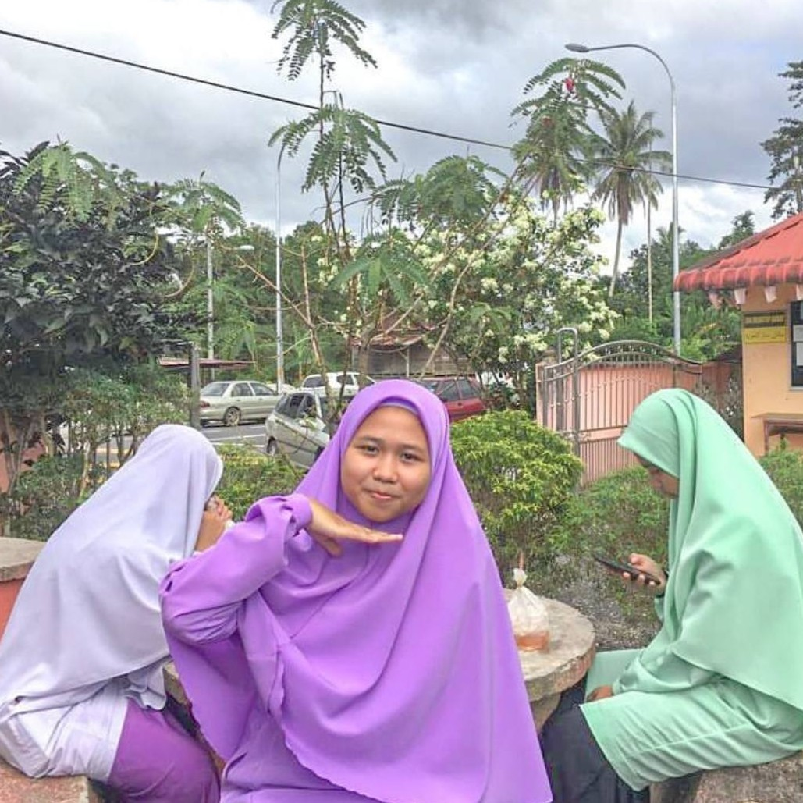
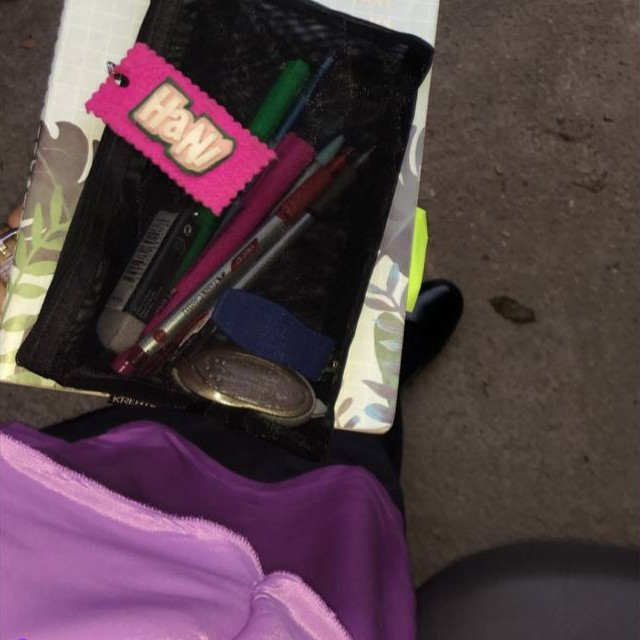
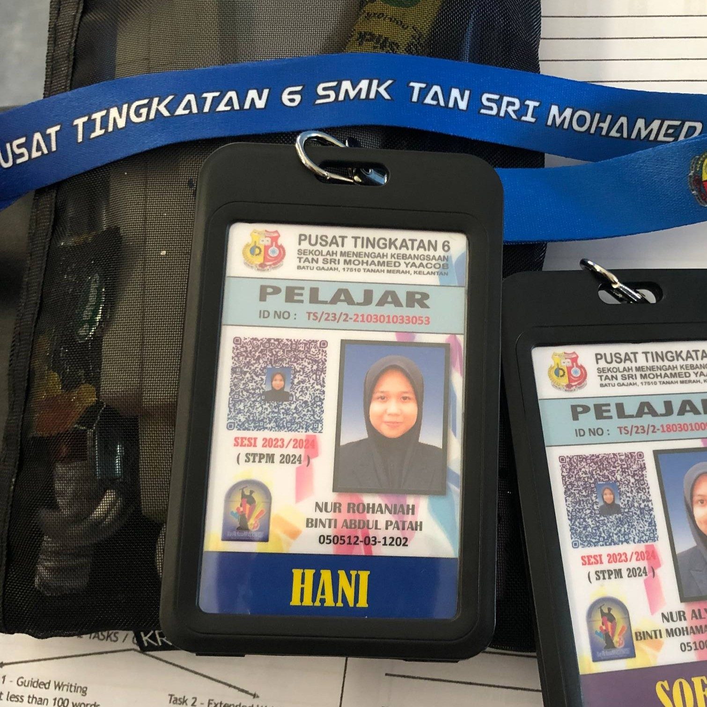
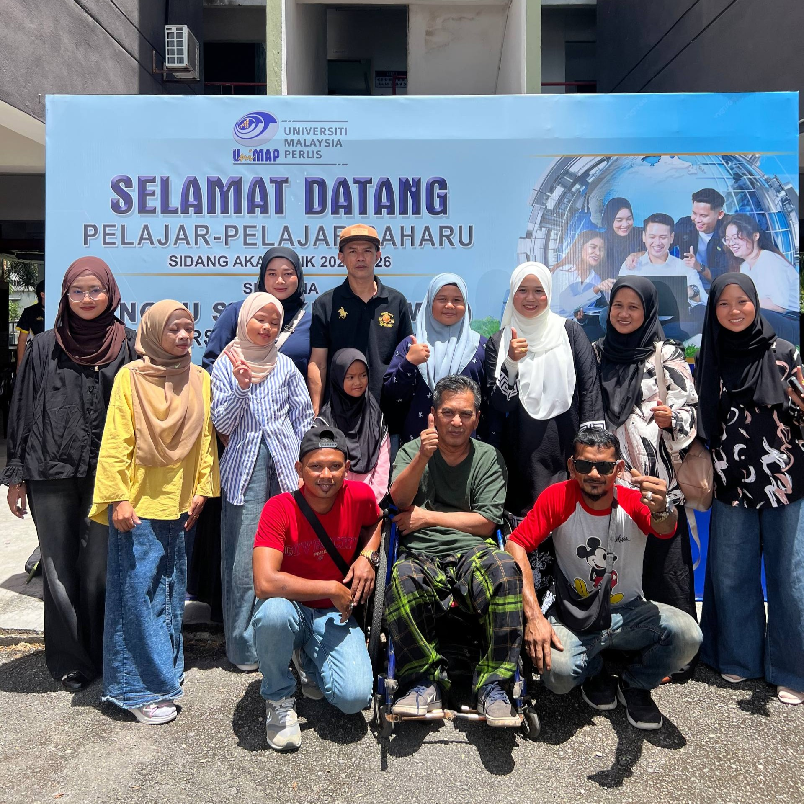

My educational journey began at a religious school. Being here is one of the moments I am most grateful for because I had the opportunity to delve into a lot of religious knowledge and very valuable moral values. The strong ukhrawi foundation here has greatly shaped my personality up to this day.

Due to a deep interest in the creative field, I made the bold decision to transfer to a regular secondary school during Form 4 to pursue the arts stream. Although my fortune in the arts stream did not materialise, I continued my journey in the literary stream. Thank God, I managed to achieve excellent results, especially an A grade in my favourite subject, which is Mathematics!( hehe I got 50ringgit from my teacher -Sir Azhar) .

Stepping into the pre-university realm, the flame of my dream to delve into the field of arts still burns, but once again, fortune did not favour me at the STPM level. I accepted and continued my studies in the Arts and Geography package. This STPM phase truly tested my mental strength due to its extremely dense syllabus. However, thanks to hard work, Alhamdulillah I successfully qualified for the degree level.

At Universiti Malaysia Perlis (UniMAP), the beautiful arrangement of His plan began to become clear. By His will, I was offered a place in the Bachelor of Interactive Media Technology with honours program. Who would have thought, this field is a combination of semi-art and IT—a branch that ultimately reunites my deep interest in the creative world and digital art. What was once lost, Allah replaced with something much better! pray for my future success!